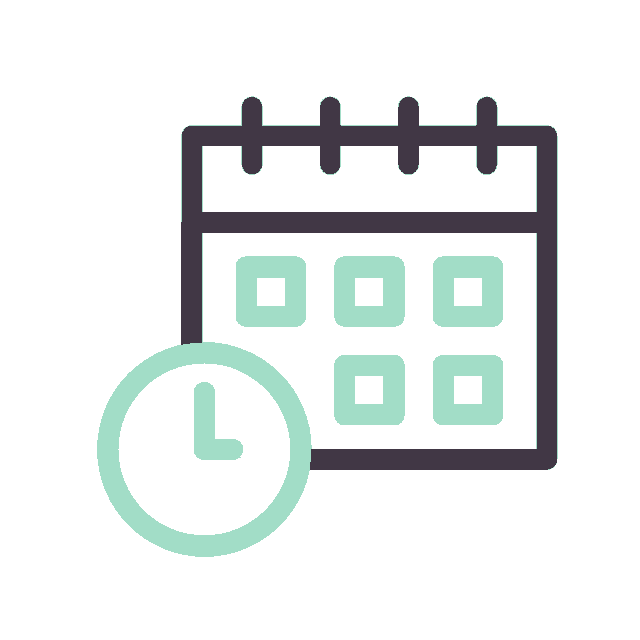
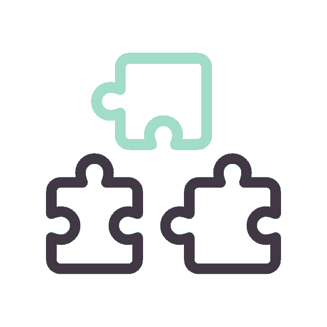

Bem-vindo(a) ao curso
Os povos ciganos fazem parte da diversidade cultural e social do Brasil, reunindo diferentes grupos, identidades, histórias e modos de vida. Apesar de sua presença no país há séculos, ainda existem muitos mitos, estereótipos e ideias do senso comum que contribuem para a construção de uma visão limitada sobre esses povos e podem reforçar situações de preconceito, estigma, discriminação e exclusão. Conhecer essa diversidade é um passo importante para reconhecer as especificidades e os direitos dos povos ciganos.
Na área da saúde, compreender essas particularidades é fundamental para fortalecer o acesso e a qualidade do cuidado. Embora o Sistema Único de Saúde (SUS) assegure o direito à saúde de todas as pessoas, aspectos socioculturais e diferentes formas de organização da vida podem influenciar a relação dos povos ciganos com os serviços de saúde. Nesse sentido, uma atenção que reconheça e respeite essas características contribui para a construção de relações mais acolhedoras e para a promoção da equidade.
Este curso convida você a conhecer melhor os povos ciganos e a refletir sobre os desafios relacionados ao acesso e ao cuidado em saúde. Ao longo da formação, serão abordados aspectos socioculturais, direitos, políticas públicas e estratégias de cuidado que contribuem para aproximar a rede de saúde dos povos ciganos, fortalecer a participação social e reduzir situações de preconceito, estigma e discriminação, promovendo uma atenção mais equitativa e inclusiva no SUS.
Assista ao vídeo de boas vindas!
Estrutura do curso
Modalidade Autoinstrucional

120 horas de carga horária

4 módulos
Bom curso!